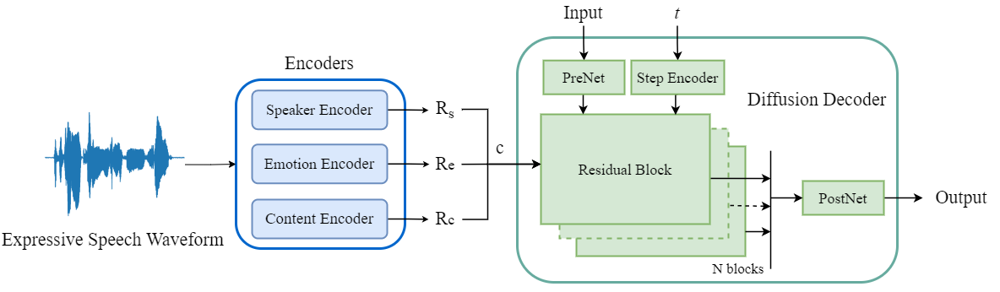

Abstract: Expressive voice conversion aims to convert speaker characteristics from one emotional speaker to another while preserving linguistic information. In this paper, we study a novel method to model speaker-dependent and speaker-independent emotional prosody across different speakers. We propose a fully end-to-end expressive voice conversion framework based on a denoising diffusion probabilistic model, which is conditioned on content and emotional prosody representations. To achieve proper disentanglement, we employ soft speech units from the HuBERT-Soft as content representations, and deep features derived from speech emotion recognition and speaker verification as emotional prosody features. At run-time, we convert the speaker-dependent emotional prosody while retaining speaker-independent emotional prosody and content information. Objective and subjective evaluations validate the effectiveness of proposed framework. Codes and samples are publicly available.
Codes: We will release our codes here once the paper is accepted.
-------------------------------- Model Architecture -------------------------------

Figure 1. An illustration of the training phase of the proposed framework - DEVC, where the green boxes represent the modules that are involved in the training while the others are not.
In a comparative study, we adopt the following two models as our baseline frameworks:
Baseline: JES-StarGAN [1], a many-to-many expressive voice conversion framework for S2S setting.
Baseline-U: A JES-StarGAN based framework for S2U and U2U settings.
Proposed Method: DEVC, an any-to-any expressive voice conversion framework.
The samples are from four emotions (Angry, Sad, Happy, and Neutral) and three conversion scenarios (the conversion between seen speakers (S2S), the conversion between seen and unseen speakers (S2U); the conversion between unseen speakers (U2U).
We provide the utterances from source speakers, denoted as Source; the converted utterances from baseline frameworks, , denoted as Baseline [1] or Baseline-U; the converted utterances from our proposed method, denoted as DEVC; the utterances from target speakers, denoted as Target.
Source
Baseline [1]
DEVC
Target
Seen to Seen Speakers
Angry
Sad
Happy
Neutral
Source
Baseline-U
DEVC
Target
Seen to Unseen Speakers
Angry
Sad
Happy
Neutral
Unseen to Unseen Speakers
Angry
Sad
Happy
Neutral
[1] Z. Du, B. Sisman, K. Zhou and H. Li, "Expressive Voice Conversion: A Joint Framework for Speaker Identity and Emotional Style Transfer," 2021 IEEE Automatic Speech Recognition and Understanding Workshop (ASRU), Cartagena, Colombia, 2021, pp. 594-601, doi: 10.1109/ASRU51503.2021.9687906.